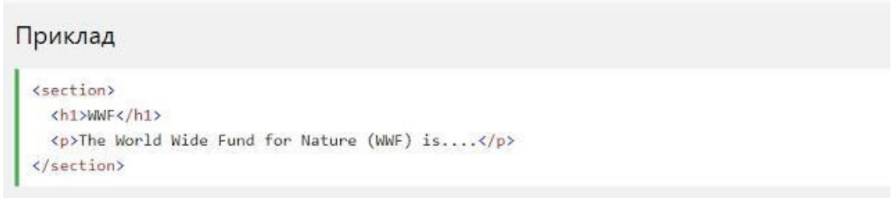
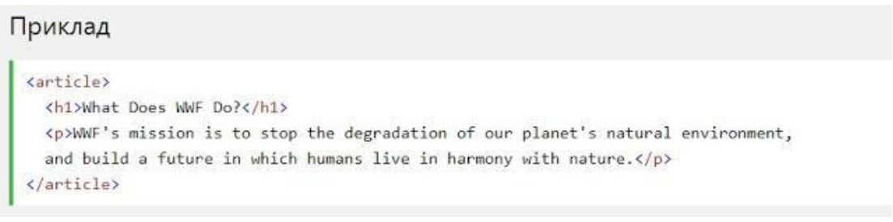

HTML5 <section> елемент
Елемент <section>визначає розділ в документі.
Згідно з документацією в3к'с HTML5: "розділ представляє собою
тематичну угруповання контенту, зазвичай з заголовком".
Домашня сторінка зазвичай може бути розділена на розділи для
ознайомлення, змісту і контактної інформації.

HTML5 <article> елемент
Елемент <article>визначає незалежний, автономний вміст.
Стаття повинна мати сенс самостійно, і вона повинна мати можливість
читати його незалежно від іншої частини веб-сайту.
Приклади того, де можна використовувати елемент <article>:
-
Повідомлення на форумі
-
блозі
-
Газетна стаття
